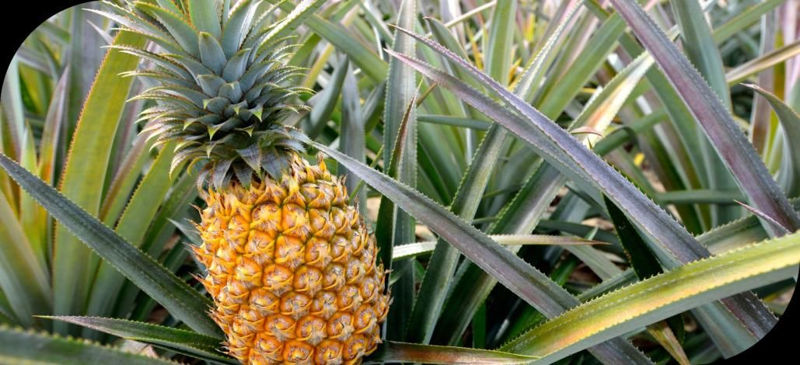

Pineapple cultivation
- Commercial planting in Pontian, Johor
- Smart irrigation and IoT field monitoring
- Fruit for fresh, export and beverage use
Logsco Agro Estates grows premium pineapple with tech-led practices, and opens the gate to visitors: guided plantation tours, a specialty café and a farm shop.

To be Malaysia’s leading pineapple estate destination, where premium cultivation, nature and hospitality come together.
To grow premium pineapples with sustainable, tech-led practices, welcome visitors through eco-tourism and café experiences, and supply fresh, export and beverage markets.
Park, meet your guide and get your bearings.
Walk the rows and see how pineapple is grown.
Harvest your own, in season.
Coffee, fresh juice and a cold Pina Boosta.
Fresh fruit and estate products to take home.

The Pontian estate is where we demonstrate our machinery and IoT to buyers: sensors in the ground, dashboards on the screen and fruit on the line. Book a demonstration visit for your team.
Farm education days that show where food comes from, from soil to harvest.
Tours, pick-your-own and the café. A Johor day trip with something for everyone.
Team days, photo shoots and small events among the pineapple rows.
Opening hours, tour times and prices to be confirmed with the estate team.
Tell us the date, group size and what you’d like to see. We’ll confirm availability.